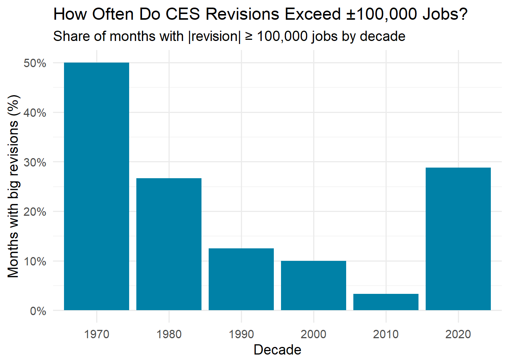
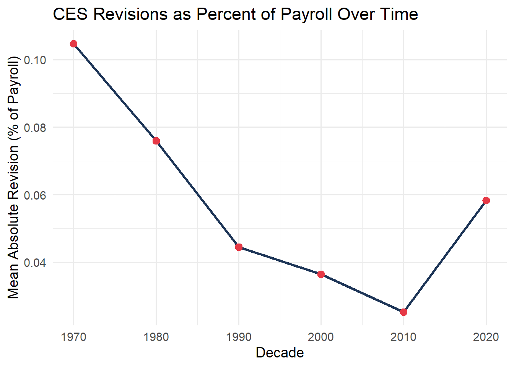
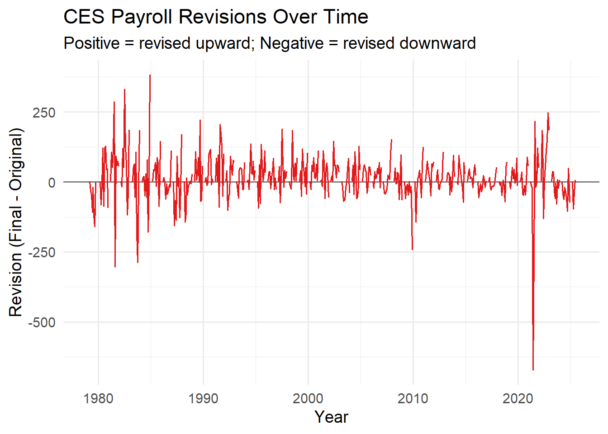
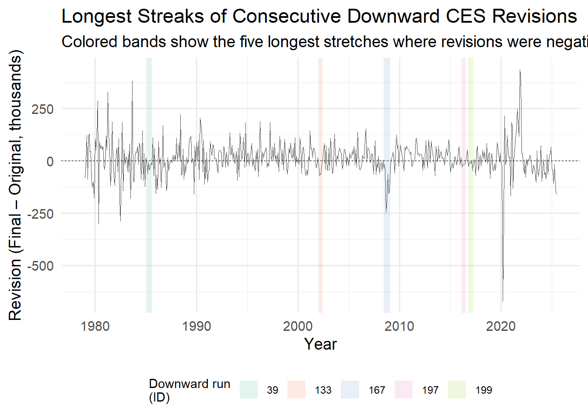

Beginning in 2024, the trustworthiness of the Bureau of Labor Statistics came under scrutiny. Claims from multiple politicians have been circulating that the recent US employment numbers, and the subsequent revisions, could not be trusted. Particularly, some statements asserted that the jobs numbers had been purposefully overstated and then later revised downwards.
These claims received greater attention following President Donald Trump’s public criticism of the BLS. Then, in 2025, Trump removed Biden-nominated BLS Commissioner Erika McEntarfer, citing “rigged” jobs reports and downward revisions to employment numbers as evidence that the agency’s data was inaccurate, manipulated, and politically biased.
Did the BLS really rig the jobs reports through overstatement of employment numbers and downward revisions?
Revisions to monthly employment estimates are a routine part of the Bureau of Labor Statistics data process. Initial numbers are based on incomplete surveys given to households and businesses and are later revised as more payroll information becomes available. This data collection process results in both upward and downward revisions, regardless of the political climate.
The key question we will address in our analysis is whether the recent revisions significantly and meaningfully depart from historical patterns and trends. If the revisions in recent years are unusually large, frequent or disproportionately negative compared to previous decades, this would lend support to the claims that the BLS’s employment data is unreliable. If not, revisions may just reflect the normal uncertainty with typical data collection processes in real-time measurement.
Data Aquistion
To begin our analysis we download the CES Estimates and the CES Revisions data sets directly from the Bureau of Labor Statistics.
Downloading Final CES Estimates
Code
library(httr2)library(rvest)library(dplyr)library(tidyr)library(stringr)library(lubridate)library(knitr)# Send POST request using httr2resp <- httr2::request("https://data.bls.gov/pdq/SurveyOutputServlet") |> httr2::req_method("POST") |> httr2::req_headers("Content-Type"="application/x-www-form-urlencoded","Origin"="https://data.bls.gov","Referer"="https://data.bls.gov/pdq/SurveyOutputServlet","User-Agent"="Mozilla/5.0" ) |> httr2::req_body_form(request_action ="get_data",reformat ="true",from_results_page ="true",from_year ="1979",to_year ="2025",initial_request ="false",data_tool ="surveymost",series_id ="CES0000000001",years_option ="specific_years" ) |> httr2::req_perform()# Parse HTML and grab the correct (second) tablehtml <- httr2::resp_body_html(resp)tables <- html |> rvest::html_elements("table")# first table is metadata, second is Year/Jan...Decces_raw <- tables[[2]] |> rvest::html_table()# Reshape Year/Jan...Dec into monthly date + levelces_levels <- ces_raw |> tidyr::pivot_longer(cols =-Year, # all columns except Yearnames_to ="month",values_to ="level" ) |> dplyr::mutate(ym_str =paste(Year, month), # "1979 Jan"date = lubridate::ym(ym_str), # 1979-01-01level =as.numeric(gsub(",", "", level)) ) |> dplyr::select(date, level) |> dplyr::arrange(date) |> dplyr::filter( date >=as.Date("1979-01-01"), date <=as.Date("2025-07-01") ) |> tidyr::drop_na()kable( ces_levels,head(10),format ="html",caption ="Nonfarm Payroll Levels")
Nonfarm Payroll Levels
date
level
1979-01-01
88808
1979-02-01
89055
1979-03-01
89479
1979-04-01
89417
1979-05-01
89789
1979-06-01
90108
1979-07-01
90217
1979-08-01
90300
1979-09-01
90327
1979-10-01
90481
1979-11-01
90573
1979-12-01
90672
1980-01-01
90800
1980-02-01
90883
1980-03-01
90994
1980-04-01
90849
1980-05-01
90420
1980-06-01
90101
1980-07-01
89840
1980-08-01
90099
1980-09-01
90213
1980-10-01
90490
1980-11-01
90747
1980-12-01
90943
1981-01-01
91033
1981-02-01
91105
1981-03-01
91210
1981-04-01
91283
1981-05-01
91296
1981-06-01
91490
1981-07-01
91601
1981-08-01
91565
1981-09-01
91477
1981-10-01
91380
1981-11-01
91171
1981-12-01
90895
1982-01-01
90565
1982-02-01
90563
1982-03-01
90434
1982-04-01
90150
1982-05-01
90107
1982-06-01
89865
1982-07-01
89521
1982-08-01
89363
1982-09-01
89183
1982-10-01
88907
1982-11-01
88786
1982-12-01
88771
1983-01-01
88990
1983-02-01
88917
1983-03-01
89090
1983-04-01
89364
1983-05-01
89644
1983-06-01
90021
1983-07-01
90437
1983-08-01
90129
1983-09-01
91247
1983-10-01
91520
1983-11-01
91875
1983-12-01
92230
1984-01-01
92673
1984-02-01
93157
1984-03-01
93429
1984-04-01
93792
1984-05-01
94098
1984-06-01
94479
1984-07-01
94789
1984-08-01
95032
1984-09-01
95344
1984-10-01
95629
1984-11-01
95982
1984-12-01
96107
1985-01-01
96372
1985-02-01
96503
1985-03-01
96842
1985-04-01
97038
1985-05-01
97312
1985-06-01
97459
1985-07-01
97648
1985-08-01
97840
1985-09-01
98045
1985-10-01
98233
1985-11-01
98443
1985-12-01
98609
1986-01-01
98732
1986-02-01
98847
1986-03-01
98934
1986-04-01
99121
1986-05-01
99248
1986-06-01
99155
1986-07-01
99473
1986-08-01
99588
1986-09-01
99934
1986-10-01
100121
1986-11-01
100308
1986-12-01
100509
1987-01-01
100678
1987-02-01
100919
1987-03-01
101164
1987-04-01
101499
1987-05-01
101728
1987-06-01
101900
1987-07-01
102247
1987-08-01
102420
1987-09-01
102647
1987-10-01
103138
1987-11-01
103372
1987-12-01
103661
1988-01-01
103753
1988-02-01
104214
1988-03-01
104489
1988-04-01
104732
1988-05-01
104962
1988-06-01
105326
1988-07-01
105550
1988-08-01
105674
1988-09-01
106013
1988-10-01
106276
1988-11-01
106617
1988-12-01
106898
1989-01-01
107161
1989-02-01
107427
1989-03-01
107621
1989-04-01
107791
1989-05-01
107913
1989-06-01
108027
1989-07-01
108069
1989-08-01
108120
1989-09-01
108369
1989-10-01
108476
1989-11-01
108752
1989-12-01
108836
1990-01-01
109196
1990-02-01
109436
1990-03-01
109640
1990-04-01
109674
1990-05-01
109828
1990-06-01
109850
1990-07-01
109815
1990-08-01
109606
1990-09-01
109523
1990-10-01
109377
1990-11-01
109222
1990-12-01
109168
1991-01-01
109058
1991-02-01
108735
1991-03-01
108568
1991-04-01
108350
1991-05-01
108253
1991-06-01
108330
1991-07-01
108290
1991-08-01
108299
1991-09-01
108335
1991-10-01
108361
1991-11-01
108300
1991-12-01
108330
1992-01-01
108365
1992-02-01
108313
1992-03-01
108367
1992-04-01
108517
1992-05-01
108647
1992-06-01
108707
1992-07-01
108792
1992-08-01
108916
1992-09-01
108952
1992-10-01
109138
1992-11-01
109283
1992-12-01
109502
1993-01-01
109790
1993-02-01
110048
1993-03-01
110004
1993-04-01
110300
1993-05-01
110571
1993-06-01
110742
1993-07-01
111054
1993-08-01
111200
1993-09-01
111449
1993-10-01
111734
1993-11-01
111988
1993-12-01
112324
1994-01-01
112601
1994-02-01
112782
1994-03-01
113245
1994-04-01
113589
1994-05-01
113922
1994-06-01
114239
1994-07-01
114608
1994-08-01
114903
1994-09-01
115247
1994-10-01
115457
1994-11-01
115868
1994-12-01
116173
1995-01-01
116505
1995-02-01
116694
1995-03-01
116908
1995-04-01
117065
1995-05-01
117047
1995-06-01
117291
1995-07-01
117382
1995-08-01
117646
1995-09-01
117873
1995-10-01
118026
1995-11-01
118165
1995-12-01
118325
1996-01-01
118317
1996-02-01
118737
1996-03-01
118992
1996-04-01
119158
1996-05-01
119496
1996-06-01
119770
1996-07-01
120019
1996-08-01
120198
1996-09-01
120400
1996-10-01
120665
1996-11-01
120947
1996-12-01
121143
1997-01-01
121357
1997-02-01
121674
1997-03-01
121991
1997-04-01
122288
1997-05-01
122560
1997-06-01
122816
1997-07-01
123114
1997-08-01
123086
1997-09-01
123575
1997-10-01
123924
1997-11-01
124226
1997-12-01
124549
1998-01-01
124806
1998-02-01
125017
1998-03-01
125165
1998-04-01
125446
1998-05-01
125846
1998-06-01
126076
1998-07-01
126211
1998-08-01
126546
1998-09-01
126744
1998-10-01
126948
1998-11-01
127223
1998-12-01
127595
1999-01-01
127699
1999-02-01
128118
1999-03-01
128234
1999-04-01
128596
1999-05-01
128813
1999-06-01
129084
1999-07-01
129421
1999-08-01
129572
1999-09-01
129772
1999-10-01
130178
1999-11-01
130467
1999-12-01
130783
2000-01-01
131011
2000-02-01
131121
2000-03-01
131604
2000-04-01
131883
2000-05-01
132105
2000-06-01
132062
2000-07-01
132228
2000-08-01
132234
2000-09-01
132338
2000-10-01
132352
2000-11-01
132556
2000-12-01
132716
2001-01-01
132703
2001-02-01
132788
2001-03-01
132751
2001-04-01
132457
2001-05-01
132409
2001-06-01
132299
2001-07-01
132171
2001-08-01
132021
2001-09-01
131763
2001-10-01
131452
2001-11-01
131144
2001-12-01
130983
2002-01-01
130859
2002-02-01
130736
2002-03-01
130722
2002-04-01
130615
2002-05-01
130632
2002-06-01
130673
2002-07-01
130583
2002-08-01
130582
2002-09-01
130503
2002-10-01
130617
2002-11-01
130616
2002-12-01
130465
2003-01-01
130573
2003-02-01
130441
2003-03-01
130235
2003-04-01
130172
2003-05-01
130196
2003-06-01
130185
2003-07-01
130184
2003-08-01
130153
2003-09-01
130253
2003-10-01
130440
2003-11-01
130481
2003-12-01
130589
2004-01-01
130756
2004-02-01
130820
2004-03-01
131139
2004-04-01
131412
2004-05-01
131697
2004-06-01
131794
2004-07-01
131853
2004-08-01
131940
2004-09-01
132091
2004-10-01
132431
2004-11-01
132504
2004-12-01
132629
2005-01-01
132781
2005-02-01
133033
2005-03-01
133152
2005-04-01
133519
2005-05-01
133689
2005-06-01
133947
2005-07-01
134300
2005-08-01
134503
2005-09-01
134554
2005-10-01
134643
2005-11-01
134999
2005-12-01
135158
2006-01-01
135426
2006-02-01
135731
2006-03-01
136036
2006-04-01
136208
2006-05-01
136249
2006-06-01
136335
2006-07-01
136529
2006-08-01
136693
2006-09-01
136829
2006-10-01
136846
2006-11-01
137061
2006-12-01
137249
2007-01-01
137472
2007-02-01
137558
2007-03-01
137782
2007-04-01
137845
2007-05-01
137993
2007-06-01
138069
2007-07-01
138044
2007-08-01
138013
2007-09-01
138101
2007-10-01
138177
2007-11-01
138291
2007-12-01
138395
2008-01-01
138391
2008-02-01
138327
2008-03-01
138257
2008-04-01
138038
2008-05-01
137851
2008-06-01
137698
2008-07-01
137498
2008-08-01
137211
2008-09-01
136762
2008-10-01
136293
2008-11-01
135543
2008-12-01
134847
2009-01-01
134078
2009-02-01
133317
2009-03-01
132492
2009-04-01
131821
2009-05-01
131468
2009-06-01
131007
2009-07-01
130662
2009-08-01
130472
2009-09-01
130247
2009-10-01
130062
2009-11-01
130058
2009-12-01
129808
2010-01-01
129802
2010-02-01
129705
2010-03-01
129865
2010-04-01
130120
2010-05-01
130643
2010-06-01
130509
2010-07-01
130415
2010-08-01
130416
2010-09-01
130342
2010-10-01
130621
2010-11-01
130749
2010-12-01
130830
2011-01-01
130837
2011-02-01
131056
2011-03-01
131282
2011-04-01
131597
2011-05-01
131704
2011-06-01
131931
2011-07-01
131993
2011-08-01
132125
2011-09-01
132344
2011-10-01
132553
2011-11-01
132690
2011-12-01
132888
2012-01-01
133245
2012-02-01
133508
2012-03-01
133748
2012-04-01
133825
2012-05-01
133933
2012-06-01
134012
2012-07-01
134157
2012-08-01
134338
2012-09-01
134517
2012-10-01
134668
2012-11-01
134825
2012-12-01
135074
2013-01-01
135257
2013-02-01
135545
2013-03-01
135689
2013-04-01
135873
2013-05-01
136095
2013-06-01
136279
2013-07-01
136391
2013-08-01
136646
2013-09-01
136821
2013-10-01
137041
2013-11-01
137316
2013-12-01
137373
2014-01-01
137561
2014-02-01
137712
2014-03-01
137985
2014-04-01
138297
2014-05-01
138512
2014-06-01
138849
2014-07-01
139073
2014-08-01
139269
2014-09-01
139563
2014-10-01
139797
2014-11-01
140090
2014-12-01
140364
2015-01-01
140568
2015-02-01
140827
2015-03-01
140923
2015-04-01
141196
2015-05-01
141538
2015-06-01
141709
2015-07-01
141991
2015-08-01
142125
2015-09-01
142275
2015-10-01
142579
2015-11-01
142808
2015-12-01
143077
2016-01-01
143210
2016-02-01
143407
2016-03-01
143662
2016-04-01
143855
2016-05-01
143900
2016-06-01
144146
2016-07-01
144520
2016-08-01
144662
2016-09-01
144967
2016-10-01
145066
2016-11-01
145183
2016-12-01
145408
2017-01-01
145628
2017-02-01
145848
2017-03-01
145969
2017-04-01
146174
2017-05-01
146380
2017-06-01
146583
2017-07-01
146772
2017-08-01
146919
2017-09-01
147007
2017-10-01
147150
2017-11-01
147373
2017-12-01
147523
2018-01-01
147660
2018-02-01
148054
2018-03-01
148280
2018-04-01
148422
2018-05-01
148740
2018-06-01
148959
2018-07-01
149020
2018-08-01
149279
2018-09-01
149358
2018-10-01
149526
2018-11-01
149617
2018-12-01
149809
2019-01-01
150059
2019-02-01
150065
2019-03-01
150295
2019-04-01
150593
2019-05-01
150621
2019-06-01
150839
2019-07-01
150936
2019-08-01
151171
2019-09-01
151365
2019-10-01
151460
2019-11-01
151668
2019-12-01
151795
2020-01-01
152031
2020-02-01
152292
2020-03-01
150895
2020-04-01
130424
2020-05-01
133040
2020-06-01
137671
2020-07-01
139255
2020-08-01
140819
2020-09-01
141770
2020-10-01
142461
2020-11-01
142731
2020-12-01
142548
2021-01-01
142913
2021-02-01
143422
2021-03-01
144246
2021-04-01
144611
2021-05-01
145032
2021-06-01
145828
2021-07-01
146759
2021-08-01
147246
2021-09-01
147712
2021-10-01
148569
2021-11-01
149206
2021-12-01
149781
2022-01-01
150006
2022-02-01
150875
2022-03-01
151346
2022-04-01
151651
2022-05-01
151892
2022-06-01
152353
2022-07-01
153049
2022-08-01
153286
2022-09-01
153513
2022-10-01
153913
2022-11-01
154210
2022-12-01
154336
2023-01-01
154780
2023-02-01
155086
2023-03-01
155171
2023-04-01
155387
2023-05-01
155614
2023-06-01
155871
2023-07-01
156019
2023-08-01
156176
2023-09-01
156334
2023-10-01
156520
2023-11-01
156661
2023-12-01
156930
2024-01-01
157049
2024-02-01
157271
2024-03-01
157517
2024-04-01
157635
2024-05-01
157828
2024-06-01
157915
2024-07-01
158003
2024-08-01
158074
2024-09-01
158314
2024-10-01
158358
2024-11-01
158619
2024-12-01
158942
2025-01-01
159053
2025-02-01
159155
2025-03-01
159275
2025-04-01
159433
2025-05-01
159452
2025-06-01
159439
2025-07-01
159511
Downloading CES Revisions
Code
library(httr2)library(rvest)library(dplyr)library(tidyr)library(purrr)library(stringr)library(tibble)library(knitr)# Avoid HTTP/2 issues options(curl_http_version =2)# reques with hhtr2 url_ces <-"https://www.bls.gov/web/empsit/cesnaicsrev.htm"req_ces <- httr2::request(url_ces) |> httr2::req_method("GET") |> httr2::req_headers("User-Agent"="Mozilla/5.0 (Windows NT 10.0; Win64; x64; rv:120.0) Gecko/20100101 Firefox/120.0","Accept"="text/html,application/xhtml+xml,application/xml;q=0.9,*/*;q=0.8","Accept-Language"="en-US,en;q=0.5","Referer"="https://www.bls.gov/","Connection"="keep-alive" ) |> httr2::req_options(http_version =2L) # HTTP/1.1resp_ces <- httr2::req_perform(req_ces)page_ces <- resp_ces |> httr2::resp_body_html()# Returns: date, original, final, revisionget_ces_revisions_year <-function(year, html_page = page_ces) {# 1. Grab the table for that year by its id, then just the tbody tbl_raw <- html_page |> rvest::html_element(sprintf("table#%s", year)) |> rvest::html_element("tbody") |> rvest::html_table(header =FALSE, fill =TRUE) |> tibble::as_tibble()# 2. First 12 body rows are Jan–Dec, columns 3 & 5 are 1st and 3rd estimates tbl_clean <- tbl_raw |> dplyr::slice(1:12) |> dplyr::select(month =1, # "Jan.", "Feb.", etc. (not strictly needed)original =3, # 1st estimate (SA)final =5# 3rd estimate (SA) ) |> dplyr::mutate(month_index = dplyr::row_number(),date =as.Date(sprintf("%d-%02d-01", year, month_index)),original =as.numeric(gsub(",", "", original)),final =as.numeric(gsub(",", "", final)),revision = final - original ) |> dplyr::select(date, original, final, revision) tbl_clean}# apply to all yearsyears_vec <-1979:2025ces_revisions_all <- purrr::map_dfr( years_vec, get_ces_revisions_year)# Filter to jan 1979 – jun 2025 ces_revisions <- ces_revisions_all |> dplyr::filter( date >=as.Date("1979-01-01"), date <=as.Date("2025-06-01") ) |> dplyr::arrange(date)ces_revisions
This plot shows the total employment level through the years. As expected, jobs numbers are increasing with a significant dip in 2020 which is also expected.
This plot shows the revisions over time with a significant spike around 2020 and 2021. This can potentially be explained by the BLS “catching up” to the changes that COVID caused in 2020.
Year with the largest jump in typical revision size (median |revision| vs previous year)
Code
library(dplyr)library(knitr)rev_change_by_year <- ces_full |>group_by(year) |>summarise(median_abs_revision =median(abs_revision, na.rm =TRUE),.groups ="drop" ) |>arrange(year) |>mutate(change_from_prev = median_abs_revision -lag(median_abs_revision) )largest_jump <- rev_change_by_year |>arrange(desc(change_from_prev)) |>slice(1) |>transmute(Year = year,`Median absolute revision (jobs)`=formatC(median_abs_revision *1000, format ="f", digits =0, big.mark =","),`Increase from previous year (jobs)`=formatC(change_from_prev *1000, format ="f", digits =0, big.mark =",") ) |>as.data.frame()kable( largest_jump,format ="html",caption ="Year with the Largest Increase in Typical CES Revision Size (Median Absolute Revision)")
Year with the Largest Increase in Typical CES Revision Size (Median Absolute Revision)
Year
Median absolute revision (jobs)
Increase from previous year (jobs)
2021
152,500
116,500
2021 had the largest increase in typical revision size.
Largest election year spike
Code
library(dplyr)library(knitr)# Define U.S. presidential election yearselection_years <-c(1980, 1984, 1988, 1992, 1996, 2000,2004, 2008, 2012, 2016, 2020, 2024)# Mark election years in the full CES datasetces_full <- ces_full |>mutate(is_election_year = year %in% election_years)# Compute magnitude statistics for election years onlyelection_magnitude_stats <- ces_full |>filter(is_election_year) |># keep election yearsgroup_by(year) |>summarise(mean_abs_rev =mean(abs_revision, na.rm =TRUE),median_abs_rev =median(abs_revision, na.rm =TRUE),max_abs_rev =max(abs_revision, na.rm =TRUE),.groups ="drop" ) |>arrange(desc(max_abs_rev)) |># sort by largest spiketransmute(Year = year,`Mean absolute revision (jobs)`=formatC(mean_abs_rev *1000, format ="f", digits =0, big.mark =","),`Median absolute revision (jobs)`=formatC(median_abs_rev *1000, format ="f", digits =0, big.mark =","),`Maximum single-month revision (jobs)`=formatC(max_abs_rev *1000, format ="f", digits =0, big.mark =",") ) |>as.data.frame()# Render clean HTML tablekable( election_magnitude_stats,format ="html",caption ="Magnitude of CES Revisions in Presidential Election Years (Sorted by Largest Monthly Spike)")
Magnitude of CES Revisions in Presidential Election Years (Sorted by Largest Monthly Spike)
Direction of CES Payroll Revisions in Election Years
Year
Mean revision (jobs)
Median revision (jobs)
Most negative revision (jobs)
Most positive revision (jobs)
1980
45,500
63,500
-303,000
286,000
1984
15,333
39,000
-122,000
145,000
1988
17,833
3,000
-87,000
222,000
1992
14,250
40,500
-58,000
69,000
1996
33,583
40,000
-74,000
189,000
2000
1,167
-4,500
-71,000
111,000
2004
21,417
29,500
-40,000
62,000
2008
-73,083
-45,000
-244,000
2,000
2012
23,833
20,500
-47,000
101,000
2016
-2,833
-11,500
-29,000
52,000
2020
-59,917
-6,500
-672,000
216,000
2024
-20,083
-19,000
-97,000
67,000
Code
library(dplyr)library(ggplot2)library(plotly)## Election years + colors election_years <-c(1980, 1984, 1988, 1992, 1996, 2000,2004, 2008, 2012, 2016, 2020, 2024)election_colors <-c("1980"="#D11149","1984"="#0081A7","1988"="#F17105","1992"="#9A3DFF","1996"="#2EC4B6","2000"="#FFD23F","2004"="#A0522D","2008"="#1B4965","2012"="#FF6B6B","2016"="#4CAF50","2020"="#FB8500","2024"="#8E7DBE")## Make sure the helper columns exist on ces_fullces_mag_plot <- ces_full |>mutate(abs_rev = abs_revision,is_election_year = year %in% election_years,election_factor =factor(year) )## Build the ggplot version with Thin linesp_mag <-ggplot() +# grey background: all months, very thingeom_line(data = ces_mag_plot,aes(x = date, y = abs_rev),color ="grey70",linewidth =0.2, alpha =0.7 ) +# election years: coloredgeom_line(data = ces_mag_plot |>filter(is_election_year),aes(x = date, y = abs_rev, color = election_factor),linewidth =0.8 ) +scale_color_manual(values = election_colors,name ="Election Year" ) +labs(title ="Magnitude of CES Revisions (Absolute Values)",subtitle ="Election years highlighted — grey background shows all months",x ="Year",y ="Absolute Revision" ) +theme_minimal(base_size =14) +theme(legend.position ="bottom",legend.title =element_text(size =12),legend.text =element_text(size =10) )## Convert to interactive plotlyggplotly(p_mag)
Code
library(plotly)library(dplyr)library(ggplot2)library(lubridate)# Election years and colorselection_years <-c(1980, 1984, 1988, 1992, 1996, 2000,2004, 2008, 2012, 2016, 2020, 2024)election_colors <-c("1980"="#E63946","1984"="#1D3557","1988"="#F4A261","1992"="#2A9D8F","1996"="#A8DADC","2000"="#E9C46A","2004"="#264653","2008"="#9B5DE5","2012"="#F15BB5","2016"="#00BBF9","2020"="#00F5D4","2024"="#FF8500")# Prep data for direction plotces_dir_plot <- ces_full |>filter(!is.na(revision), !is.na(date)) |>mutate(is_election_year = year %in% election_years,election_factor =factor(year) )# Thin + distinct colorsp_dir <-ggplot() +# background: all months in light grey, thingeom_line(data = ces_dir_plot,aes(x = date, y = revision),color ="grey80", linewidth =0.2, alpha =0.7 ) +# election years: colored, slightly thickergeom_line(data = ces_dir_plot |>filter(is_election_year),aes(x = date, y = revision, color = election_factor),linewidth =0.6 ) +geom_hline(yintercept =0, linetype ="dashed", linewidth =0.3) +scale_color_manual(values = election_colors, name ="Election Year") +labs(title ="Direction of CES Revisions (Signed Values)",subtitle ="Election years highlighted — positive vs negative revisions",x ="Year",y ="Revision (Final - Original)" ) +theme_minimal(base_size =14) +theme(legend.position ="bottom",legend.title =element_text(size =12),legend.text =element_text(size =10) )ggplotly(p_dir)
Fraction of Revisions > 100k
Code
#Flag months with revision >100klibrary(dplyr)ces_full <- ces_full |>mutate(big_rev_100k =abs(revision) >=100# 100 = 100,000 jobs )#Share of months with rev > 100kbig_rev_overall <- ces_full |>summarise(n_months =n(),n_big_rev =sum(big_rev_100k, na.rm =TRUE),frac_big = n_big_rev / n_months )big_rev_overall_table <- big_rev_overall |>mutate(`Total months`= n_months,`Months with |revision| ≥ 100k`= n_big_rev,`Share of months (%)`=round(frac_big *100, 2) ) |>select(`Total months`,`Months with |revision| ≥ 100k`,`Share of months (%)` ) |>as.data.frame()knitr::kable( big_rev_overall_table,format ="html",caption ="Overall Frequency of CES Payroll Revisions ≥ 100,000 Jobs")
Overall Frequency of CES Payroll Revisions ≥ 100,000 Jobs
Total months
Months with |revision| ≥ 100k
Share of months (%)
558
88
15.77
How rare are > 100k revisions?
Code
big_rev_by_decade <- ces_full |>group_by(decade) |>summarise(n_months =n(),n_big_rev =sum(big_rev_100k, na.rm =TRUE),frac_big = n_big_rev / n_months,.groups ="drop" )big_rev_by_decade_table <- big_rev_by_decade |>arrange(decade) |>mutate(`Total months`= n_months,`Months with |revision| ≥ 100k`= n_big_rev,`Share of months (%)`=round(frac_big *100, 2) ) |>select(Decade = decade,`Total months`,`Months with |revision| ≥ 100k`,`Share of months (%)` ) |>as.data.frame()knitr::kable( big_rev_by_decade_table,format ="html",caption ="How Rare Are CES Payroll Revisions ≥ 100,000 Jobs?")
How Rare Are CES Payroll Revisions ≥ 100,000 Jobs?
Decade
Total months
Months with |revision| ≥ 100k
Share of months (%)
1970
12
6
50.00
1980
120
32
26.67
1990
120
15
12.50
2000
120
12
10.00
2010
120
4
3.33
2020
66
19
28.79
Code
library(ggplot2)library(scales)p_big_decade <-ggplot(big_rev_by_decade,aes(x =factor(decade), y = frac_big)) +geom_col(fill ="#0081A7") +scale_y_continuous(labels =percent_format(accuracy =1)) +labs(title ="How Often Do CES Revisions Exceed ±100,000 Jobs?",subtitle ="Share of months with |revision| ≥ 100,000 jobs by decade",x ="Decade",y ="Months with big revisions (%)" ) +theme_minimal(base_size =14)p_big_decade

Fraction of “Downward” Revisions Over Time (Trend Slope)
Code
# Downward revisionslibrary(dplyr)library(knitr)ces_full <- ces_full |>mutate(is_down = revision <0 )down_frac_decade <- ces_full |>group_by(decade) |>summarise(n_months =n(),n_down =sum(is_down, na.rm =TRUE),frac_down = n_down / n_months,.groups ="drop" )# HTML table down_frac_decade |>mutate(`Share of downward revisions (%)`=round(frac_down *100, 2) ) |>select(Decade = decade,`Total months`= n_months,`Months with downward revisions`= n_down,`Share of downward revisions (%)` ) |>as.data.frame() |>kable(format ="html",caption ="Share of Months with Downward CES Payroll Revisions, by Decade" )
Share of Months with Downward CES Payroll Revisions, by Decade
Decade
Total months
Months with downward revisions
Share of downward revisions (%)
1970
12
7
58.33
1980
120
59
49.17
1990
120
36
30.00
2000
120
55
45.83
2010
120
45
37.50
2020
66
35
53.03
Trend slope over time (logistic regression)
Pr(downward) = β0 + β1 * year
Code
library(broom)library(dplyr)library(knitr)trend_down <-glm( is_down ~ year,data = ces_full,family =binomial())trend_down_table <-tidy(trend_down) |>mutate(term =recode(term,`(Intercept)`="Intercept",year ="Year (trend)"),Estimate =round(estimate, 4),`Std. Error`=round(std.error, 4),`z value`=round(statistic, 3),`p-value`=signif(p.value, 3) ) |>select(Term = term, Estimate,`Std. Error`,`z value`,`p-value` ) |>as.data.frame()kable( trend_down_table,format ="html",caption ="Logistic Regression: Trend in Probability of Downward CES Revisions")
Logistic Regression: Trend in Probability of Downward CES Revisions
Term
Estimate
Std. Error
z value
p-value
Intercept
-8.0142
12.7786
-0.627
0.531
Year (trend)
0.0039
0.0064
0.603
0.546
Code
#annual averages down_yearly <- ces_full |>group_by(year) |>summarise(frac_down =mean(is_down, na.rm =TRUE))#plotlibrary(ggplot2)library(scales)p_down_trend <-ggplot(down_yearly, aes(x = year, y = frac_down)) +geom_line(color ="#E63946", linewidth =1.1) +geom_smooth(method ="lm", se =TRUE, color ="#1D3557") +scale_y_continuous(labels =percent_format(accuracy =1)) +labs(title ="Fraction of Downward CES Revisions Over Time",subtitle ="Red = actual yearly share; Blue = linear trend",x ="Year",y ="Percent of months with downward revisions" ) +theme_minimal(base_size =14)ggplotly(p_down_trend)
library(dplyr)# Compute month-to-month payroll change and bin into quantilesces_growth_bins <- ces_full |>arrange(date) |>mutate(payroll_change = level - dplyr::lag(level) ) |>filter(!is.na(payroll_change), !is.na(revision)) |>mutate(growth_bin = dplyr::ntile(payroll_change, 5) # 1 = weakest, 5 = strongest growth )#For each growth bin: mean signed revision and fraction downwardgrowth_bin_stats <- ces_growth_bins |>group_by(growth_bin) |>summarise(mean_revision =mean(revision, na.rm =TRUE),frac_downward =mean(revision <0, na.rm =TRUE),n_months =n(),.groups ="drop" ) |>mutate(growth_bin =factor( growth_bin,levels =1:5,labels =c("Q1: biggest losses","Q2","Q3","Q4","Q5: biggest gains" ) ),frac_downward_pct =100* frac_downward )# Format table for presentationgrowth_bin_table <- growth_bin_stats |>transmute(`Growth quintile`= growth_bin,`Mean revision (thousands)`=round(mean_revision, 1),`Months with downward revision (%)`=paste0(round(frac_downward_pct, 1), "%"),`Number of months`= n_months ) |>as.data.frame()knitr::kable( growth_bin_table,format ="html",caption ="CES Revision Behavior by Payroll Growth Quintile")
CES Revision Behavior by Payroll Growth Quintile
Growth quintile
Mean revision (thousands)
Months with downward revision (%)
Number of months
Q1: biggest losses
-10.4
46.4%
112
Q2
0.3
50.9%
112
Q3
14.1
45%
111
Q4
8.7
39.6%
111
Q5: biggest gains
45.9
29.7%
111
Plots
Code
library(ggplot2)library(plotly)p_bins <-ggplot(growth_bin_stats,aes(x = growth_bin, y = mean_revision)) +geom_col(fill ="#1f77b4", alpha =0.8) +geom_hline(yintercept =0, linetype ="dashed") +labs(title ="Average CES Revision by Job-Growth Quintile",subtitle ="Quintiles based on month-to-month change in total nonfarm payrolls",x ="Job-growth quintile (Q1 = biggest losses, Q5 = biggest gains)",y ="Mean revision (final - original, thousands)" ) +theme_minimal(base_size =14)ggplotly(p_bins, tooltip =c("x", "y"))
Code
p_frac <-ggplot(growth_bin_stats,aes(x = growth_bin, y = frac_downward_pct)) +geom_col(fill ="#ff7f0e", alpha =0.8) +labs(title ="Share of Months with Downward Revisions by Job-Growth Quintile",x ="Job-growth quintile",y ="Downward revisions (%)" ) +theme_minimal(base_size =14)ggplotly(p_frac, tooltip =c("x", "y"))
Revision as a % of Total Payroll Base
Code
pct_payroll_by_decade <- ces_full |>mutate(pct_of_payroll =abs(revision) / level ) |>group_by(decade) |>summarise(mean_pct_payroll =mean(pct_of_payroll, na.rm =TRUE) *100,median_pct_payroll =median(pct_of_payroll, na.rm =TRUE) *100,max_pct_payroll =max(pct_of_payroll, na.rm =TRUE) *100,n_months =n(),.groups ="drop" ) |>arrange(decade)# Format table for presentation pct_payroll_table <- pct_payroll_by_decade |>transmute(`Decade`= decade,`Mean (% of payroll)`=paste0(round(mean_pct_payroll, 3), "%"),`Median (% of payroll)`=paste0(round(median_pct_payroll, 3), "%"),`Max (% of payroll)`=paste0(round(max_pct_payroll, 3), "%"),`Number of months`= n_months ) |>as.data.frame()knitr::kable( pct_payroll_table,format ="html",caption ="CES Revisions as a Percentage of Payroll, by Decade")
CES Revisions as a Percentage of Payroll, by Decade
Decade
Mean (% of payroll)
Median (% of payroll)
Max (% of payroll)
Number of months
1970
0.105%
0.107%
0.194%
12
1980
0.076%
0.06%
0.42%
120
1990
0.045%
0.036%
0.187%
120
2000
0.036%
0.031%
0.178%
120
2010
0.025%
0.021%
0.081%
120
2020
0.058%
0.033%
0.445%
66
Code
ggplot(pct_payroll_by_decade,aes(x = decade, y = mean_pct_payroll)) +geom_line(linewidth =1.2, color ="#1D3557") +geom_point(size =3, color ="#E63946") +labs(title ="CES Revisions as Percent of Payroll Over Time",x ="Decade",y ="Mean Absolute Revision (% of Payroll)" ) +theme_minimal(base_size =14)

Statistical Analysis
T-test: Are revisions larger after big payroll gains?
Code
library(infer)library(dplyr)# Compare revision size after large vs normal payroll gains# Compute month-to-month payroll change and absolute revision sizeces_gain <- ces_full |>arrange(date) |>mutate(payroll_change = level -lag(level), # monthly payroll changeabs_rev =abs(revision) # absolute revision size ) |>filter(!is.na(payroll_change), !is.na(abs_rev))# Define "large payroll gain" as the top 10% of monthly changesgain_threshold <-quantile( ces_gain$payroll_change,0.9,na.rm =TRUE)# Classify monthsces_gain <- ces_gain |>mutate(large_gain =if_else( payroll_change >= gain_threshold,"Large gain","Normal / low" ) )# Two-sample t-test# H0: Mean absolute revision is the same for both groups# HA: Mean absolute revision differsttest_large_gain <- ces_gain |>t_test( abs_rev ~ large_gain,order =c("Normal / low", "Large gain") )# Summary table for presentationttest_large_gain_table <- ttest_large_gain |>transmute(`t statistic`=round(statistic, 3),`Degrees of freedom`=round(t_df, 2),`p-value`=round(p_value, 3),`Alternative`= alternative,`Estimated difference (Large − Normal)`=round(estimate, 3),`95% CI lower`=round(lower_ci, 3),`95% CI upper`=round(upper_ci, 3) ) |>as.data.frame()kable( ttest_large_gain_table,format ="html",caption ="Two-sample t-test: Are absolute CES revisions larger after big payroll gains?")
Two-sample t-test: Are absolute CES revisions larger after big payroll gains?
t statistic
Degrees of freedom
p-value
Alternative
Estimated difference (Large − Normal)
95% CI lower
95% CI upper
-3.161
58.93
0.002
two.sided
-42.195
-68.902
-15.488
Bootstrap Analysis
0.95 CL
Code
library(infer)library(dplyr)library(knitr)# PERMUTATION TEST# H0: Absolute revisions are independent of large payroll gainsset.seed(123)perm_large_gain <- ces_gain |>specify(abs_rev ~ large_gain) |>hypothesize(null ="independence") |>generate(reps =2000, type ="permute") |>calculate(stat ="diff in means",order =c("Large gain", "Normal / low") )# observed statistic (same scale as permutation)obs_diff <- ces_gain |>specify(abs_rev ~ large_gain) |>calculate(stat ="diff in means",order =c("Large gain", "Normal / low") )# permutation p-value (two-sided)perm_pval <-get_p_value( perm_large_gain,obs_stat = obs_diff$stat,direction ="two-sided")# BOOTSTRAP CONFIDENCE INTERVAL# Estimates uncertainty around the same statisticboot_large_gain <- ces_gain |>specify(abs_rev ~ large_gain) |>generate(reps =2000, type ="bootstrap") |>calculate(stat ="diff in means",order =c("Large gain", "Normal / low") )boot_large_gain_ci <- boot_large_gain |>get_confidence_interval(type ="percentile")# tableboot_large_gain_ci_table <- boot_large_gain_ci |>transmute(`95% CI lower`=round(lower_ci, 3),`95% CI upper`=round(upper_ci, 3) ) |>as.data.frame()knitr::kable( boot_large_gain_ci_table,format ="html",caption ="Bootstrap 95% CI for Difference in Mean Absolute Revisions (Large Gain − Normal/Low)")
Bootstrap 95% CI for Difference in Mean Absolute Revisions (Large Gain − Normal/Low)
95% CI lower
95% CI upper
17.844
69.687
Code
library(infer)library(dplyr)library(knitr)# PURPOSE:# Use a bootstrap (computational inference) to estimate# the sampling distribution of the MEDIAN CES revision.# This avoids normality assumptions and targets the median,# not the mean.# Keep only months with observed revisionsces_rev_ok <- ces_full |>filter(!is.na(revision))# BOOTSTRAP:# Repeatedly resample months and replacement and# compute the median revision each time.# This approximates the sampling distribution of the median.set.seed(123)boot_median_rev <- ces_rev_ok |>specify(response = revision) |>generate(reps =2000, type ="bootstrap") |>calculate(stat ="median")# CONFIDENCE INTERVAL:# Percentile-based 95% bootstrap confidence interval# for the population median revision.boot_median_ci <- boot_median_rev |>get_confidence_interval(level =0.95,type ="percentile" )# tableboot_median_ci_table <- boot_median_ci |>transmute(`95% CI lower (thousands of jobs)`=round(lower_ci, 2),`95% CI upper (thousands of jobs)`=round(upper_ci, 2) ) |>as.data.frame()knitr::kable( boot_median_ci_table,format ="html",caption ="Bootstrap 95% Confidence Interval for the Median CES Revision")
Bootstrap 95% Confidence Interval for the Median CES Revision
95% CI lower (thousands of jobs)
95% CI upper (thousands of jobs)
3.5
16
Code
# Observed (sample) median CES revision# This is the actual median revision in the data (in thousands of jobs),# NOT a model-based or resampled estimateobs_median_rev <- ces_rev_ok |>summarise(median_revision =median(revision, na.rm =TRUE) )# Format the result for presentationobs_median_rev_table <- obs_median_rev |>transmute(`Median CES revision (thousands of jobs)`= median_revision ) |>as.data.frame()# Display as HTML tableknitr::kable( obs_median_rev_table,format ="html",caption ="Observed Median CES Payroll Revision")
Observed Median CES Payroll Revision
Median CES revision (thousands of jobs)
10
Are Downward revisions more common in Democratic or Republican Precidencies?
Code
library(dplyr)library(lubridate)library(infer)library(knitr)## 1. Build president/party lookup presidents_party <- tidyr::expand_grid(year =1979:2025,month = month.name,president =NA_character_,party =NA_character_) |>mutate(# Hard–code which president takes office in which month/yearpresident =case_when( month =="January"& year ==1979~"Carter", month =="February"& year ==1981~"Reagan", month =="February"& year ==1989~"Bush 41", month =="February"& year ==1993~"Clinton", month =="February"& year ==2001~"Bush 43", month =="February"& year ==2009~"Obama", month =="February"& year ==2017~"Trump I", month =="February"& year ==2021~"Biden", month =="February"& year ==2025~"Trump II",.default =NA_character_ ) ) |> tidyr::fill(president) |>mutate(# Map presidents to party label: D = Democrat, R = Republicanparty =if_else( president %in%c("Carter", "Clinton", "Obama", "Biden"),"D", "R" ) )## Join to CES and create downward indicator ces_party <- ces_full |>mutate(year =year(date),month =month(date, label =TRUE, abbr =FALSE) |>as.character() ) |>left_join(presidents_party, by =c("year", "month")) |>filter(!is.na(party), !is.na(revision)) |>mutate(downward = revision <0, # TRUE if revision is negativedownward_chr =if_else(downward, "down", "up"), # character version for infer()party =factor(party, levels =c("R", "D")) # order: Republicans, then Democrats )## fraction of downward revisions by party# Here we just describe how often revisions are negative under each partyparty_downward_summary <- ces_party |>group_by(party) |>summarise(n_months =n(), # total months for that partyn_down =sum(downward), # number of months with downward revisionfrac_down = n_down / n_months, # share of months with downward revision.groups ="drop" )# Format descriptive results as a clean HTML tableparty_downward_table <- party_downward_summary |>mutate(`Share downward (%)`=round(100* frac_down, 1) ) |>transmute(Party =as.character(party),`Total months`= n_months,`Months with downward revision`= n_down,`Share downward (%)` ) |>as.data.frame()kable( party_downward_table,format ="html",caption ="Share of Months with Downward CES Revisions, by President’s Party")
Share of Months with Downward CES Revisions, by President’s Party
Party
Total months
Months with downward revision
Share downward (%)
R
293
141
48.1
D
265
96
36.2
Code
## 4. Classical prop_test (theory-based χ² test) # Formal test of H0: probability of a downward revision is the same under R and D# prop_test() does a 2×2 chi-square test on downward (yes/no) by party (R/D)prop_party <- ces_party |>prop_test(downward ~ party,order =c("R", "D")) # CI is for p(D) − p(R)# Format prop_test output as a small inferential summary table
Code
prop_party_table <- prop_party |>transmute(`Chi-square statistic`=round(statistic, 3),`Degrees of freedom`= chisq_df,`p-value`=round(p_value, 3),`Alternative hypothesis`= alternative,`95% CI lower (p[D] − p[R])`=round(lower_ci, 3),`95% CI upper (p[D] − p[R])`=round(upper_ci, 3) ) |>as.data.frame()kable( prop_party_table,format ="html",caption ="Theory-based Test: Difference in Probability of Downward Revisions (Democrats − Republicans)")
Theory-based Test: Difference in Probability of Downward Revisions (Democrats − Republicans)
Chi-square statistic
Degrees of freedom
p-value
Alternative hypothesis
95% CI lower (p[D] − p[R])
95% CI upper (p[D] − p[R])
7.58
1
0.006
two.sided
0.034
0.204
Code
## EXTRA CREDIT: permutation + bootstrap with infer # Observed difference in proportions: p_D - p_Robs_party_diff <- ces_party |>specify(response = downward_chr,explanatory = party,success ="down") |># "success" level is the string "down"calculate(stat ="diff in props",order =c("D", "R")) # p_D - p_R# Permutation test under H0: no party effect on downward probabilityset.seed(123)perm_party <- ces_party |>specify(downward_chr ~ party, success ="down") |>hypothesize(null ="independence") |>generate(reps =2000, type ="permute") |>calculate(stat ="diff in props",order =c("D", "R"))# two-sided p-value from permutation distributionperm_pval <-get_p_value( perm_party,obs_stat = obs_party_diff$stat,direction ="two-sided")# Bootstrap CI for p_D - p_R (computational CI)set.seed(123)boot_party <- ces_party |>specify(downward_chr ~ party, success ="down") |>generate(reps =2000, type ="bootstrap") |>calculate(stat ="diff in props",order =c("D", "R"))boot_ci <- boot_party |>get_confidence_interval(level =0.95, type ="percentile")#Summarise permutation + bootstrap results in one table party_comp_summary <- tibble::tibble(`Estimate p(D) − p(R)`=round(obs_party_diff$stat, 3),`Permutation p-value`=round(perm_pval$p_value, 3),`Bootstrap 95% CI lower`=round(boot_ci$lower_ci, 3),`Bootstrap 95% CI upper`=round(boot_ci$upper_ci, 3)) |>as.data.frame()knitr::kable( party_comp_summary,format ="html",caption ="Computational Inference for Difference in Downward-Revision Probabilities (Democrats − Republicans)")
Computational Inference for Difference in Downward-Revision Probabilities (Democrats − Republicans)
Estimate p(D) − p(R)
Permutation p-value
Bootstrap 95% CI lower
Bootstrap 95% CI upper
-0.119
0.008
-0.2
-0.036
Claim 1: “Bureau of Labor Statistics employment numbers “were rigged” when the agency revised them “down by almost 900,000 jobs” after the 2024 election.” -Donald Trump(2025)
Code
library(dplyr)library(knitr)# Largest NEGATIVE revision (most negative Final - Original)largest_negative <- ces_full |>filter(!is.na(revision)) |>arrange(revision) |># most negative firstslice(1)# Format for HTML tablelargest_negative_table <- largest_negative |>transmute(Date = date,`Payroll level (jobs)`=formatC(level *1000, format ="f", digits =0, big.mark =","),`Original employment (jobs)`=formatC(original *1000, format ="f", digits =0, big.mark =","),`Final employment (jobs)`=formatC(final *1000, format ="f", digits =0, big.mark =","),`Revision (jobs)`=formatC(revision *1000, format ="f", digits =0, big.mark =","),`Revision (%)`=paste0(round(pct_revision *100, 2), "%") ) |>as.data.frame()# HTML tablekable( largest_negative_table,caption ="Largest Negative CES Payroll Revision (Final − Original)",format ="html")
Largest Negative CES Payroll Revision (Final − Original)
Date
Payroll level (jobs)
Original employment (jobs)
Final employment (jobs)
Revision (jobs)
Revision (%)
2020-03-01
150,895,000
-701,000
-1,373,000
-672,000
48.94%
Using the data from Task 3, we see that the largest downward revision was in June of 2020 at 672,000 jobs which 1st of all was not in 2024 and was nowhere near a loss of 900,000 jobs. In the following visualization, notice the “spike” downward around the year 2021. Covid was likely the driver of the huge negative revision in 2021.
From Task 3 we determined how rare are huge revisions so revisions > 100k.
Code
big_rev_by_decade <- ces_full |>group_by(decade) |>summarise(n_months =n(),n_big_rev =sum(big_rev_100k, na.rm =TRUE),frac_big = n_big_rev / n_months,.groups ="drop" )big_rev_by_decade_table <- big_rev_by_decade |>arrange(decade) |>mutate(`Total months`= n_months,`Months with |revision| ≥ 100k`= n_big_rev,`Share of months (%)`=round(frac_big *100, 2) ) |>select(Decade = decade,`Total months`,`Months with |revision| ≥ 100k`,`Share of months (%)` ) |>as.data.frame()knitr::kable( big_rev_by_decade_table,format ="html",caption ="How Rare Are CES Payroll Revisions ≥ 100,000 Jobs?")
How Rare Are CES Payroll Revisions ≥ 100,000 Jobs?
Decade
Total months
Months with |revision| ≥ 100k
Share of months (%)
1970
12
6
50.00
1980
120
32
26.67
1990
120
15
12.50
2000
120
12
10.00
2010
120
4
3.33
2020
66
19
28.79
Compared to previous decades two decades, the 2020’s do seem to have an unusually high frequency of monthly revisions at 28.79% but do not have the highest frequency of monthly revisions. However, this discrepancy can probably mostly be accounted for by the huge spike in 2021.
Code
library(ggplot2)library(scales)p_big_decade <-ggplot(big_rev_by_decade,aes(x =factor(decade), y = frac_big)) +geom_col(fill ="#0081A7") +scale_y_continuous(labels =percent_format(accuracy =1)) +labs(title ="How Often Do CES Revisions Exceed ±100,000 Jobs?",subtitle ="Share of months with |revision| ≥ 100,000 jobs by decade",x ="Decade",y ="Months with big revisions (%)" ) +theme_minimal(base_size =14)p_big_decade

Finally, we computed in Task 3, the most negative monthly revision in an election year.
Direction of CES Payroll Revisions in Election Years
Year
Mean revision (jobs)
Median revision (jobs)
Most negative revision (jobs)
Most positive revision (jobs)
1980
45,500
63,500
-303,000
286,000
1984
15,333
39,000
-122,000
145,000
1988
17,833
3,000
-87,000
222,000
1992
14,250
40,500
-58,000
69,000
1996
33,583
40,000
-74,000
189,000
2000
1,167
-4,500
-71,000
111,000
2004
21,417
29,500
-40,000
62,000
2008
-73,083
-45,000
-244,000
2,000
2012
23,833
20,500
-47,000
101,000
2016
-2,833
-11,500
-29,000
52,000
2020
-59,917
-6,500
-672,000
216,000
2024
-20,083
-19,000
-97,000
67,000
We can see that in 2024, the most negative revision was 97,000 comparable to previous election years.
Code
library(plotly)library(dplyr)library(ggplot2)library(lubridate)# Election years and colorselection_years <-c(1980, 1984, 1988, 1992, 1996, 2000,2004, 2008, 2012, 2016, 2020, 2024)election_colors <-c("1980"="#E63946","1984"="#1D3557","1988"="#F4A261","1992"="#2A9D8F","1996"="#A8DADC","2000"="#E9C46A","2004"="#264653","2008"="#9B5DE5","2012"="#F15BB5","2016"="#00BBF9","2020"="#00F5D4","2024"="#FF8500")# Prep data for direction plotces_dir_plot <- ces_full |>filter(!is.na(revision), !is.na(date)) |>mutate(is_election_year = year %in% election_years,election_factor =factor(year) )# Thin + distinct colorsp_dir <-ggplot() +# background: all months in light grey, thingeom_line(data = ces_dir_plot,aes(x = date, y = revision),color ="grey80", linewidth =0.2, alpha =0.7 ) +# election years: colored, slightly thickergeom_line(data = ces_dir_plot |>filter(is_election_year),aes(x = date, y = revision, color = election_factor),linewidth =0.6 ) +geom_hline(yintercept =0, linetype ="dashed", linewidth =0.3) +scale_color_manual(values = election_colors, name ="Election Year") +labs(title ="Direction of CES Revisions (Signed Values)",subtitle ="Election years highlighted — positive vs negative revisions",x ="Year",y ="Revision (Final - Original)" ) +theme_minimal(base_size =14) +theme(legend.position ="bottom",legend.title =element_text(size =12),legend.text =element_text(size =10) )ggplotly(p_dir)
In our plot from Task 3, 2024 doesn’t really seem to stand out much from previous election years.
Code
pct_payroll_by_decade <- ces_full |>mutate(pct_of_payroll =abs(revision) / level ) |>group_by(decade) |>summarise(mean_pct_payroll =mean(pct_of_payroll, na.rm =TRUE) *100,median_pct_payroll =median(pct_of_payroll, na.rm =TRUE) *100,max_pct_payroll =max(pct_of_payroll, na.rm =TRUE) *100,n_months =n(),.groups ="drop" ) |>arrange(decade)# Format table for presentation pct_payroll_table <- pct_payroll_by_decade |>transmute(`Decade`= decade,`Mean (% of payroll)`=paste0(round(mean_pct_payroll, 3), "%"),`Median (% of payroll)`=paste0(round(median_pct_payroll, 3), "%"),`Max (% of payroll)`=paste0(round(max_pct_payroll, 3), "%"),`Number of months`= n_months ) |>as.data.frame()knitr::kable( pct_payroll_table,format ="html",caption ="CES Revisions as a Percentage of Payroll, by Decade")
CES Revisions as a Percentage of Payroll, by Decade
Decade
Mean (% of payroll)
Median (% of payroll)
Max (% of payroll)
Number of months
1970
0.105%
0.107%
0.194%
12
1980
0.076%
0.06%
0.42%
120
1990
0.045%
0.036%
0.187%
120
2000
0.036%
0.031%
0.178%
120
2010
0.025%
0.021%
0.081%
120
2020
0.058%
0.033%
0.445%
66
We also computed revisions as a percent of the payroll, aka total jobs, in task 3. Using the levels, here we can see how tiny the revisions are compared to the total number of jobs. The yearly revisions are a very small fraction of total employment. So, there doesn’t seem to be any evidence of significant “rigging” here.
##Tests First we define post-election period
Code
# Define post-election period: Jan 2024 – Jun 2025ces_claim1 <- ces_full |>filter(!is.na(revision)) |>mutate(period =if_else( date >=as.Date("2024-1-01") & date <=as.Date("2025-06-01"),"Post-2024 election","Historical baseline" ),is_post = period =="Post-2024 election",is_down = revision <0 )
Descriptive table
Code
period_summary <- ces_claim1 |>group_by(period) |>summarise(total_revision =sum(revision, na.rm =TRUE), # thousands of jobsmean_revision =mean(revision, na.rm =TRUE),median_revision =median(revision, na.rm =TRUE),frac_down =mean(is_down, na.rm =TRUE),n_months =n(),.groups ="drop" ) |>mutate(`Total revision (thousands)`= total_revision,`Mean monthly revision (thousands)`=round(mean_revision, 1),`Median monthly revision (thousands)`=round(median_revision, 1),`Fraction of downward revisions`=paste0(round(frac_down *100, 1), "%"),`Number of months`= n_months ) |>select( period,`Total revision (thousands)`,`Mean monthly revision (thousands)`,`Median monthly revision (thousands)`,`Fraction of downward revisions`,`Number of months` )kable( period_summary,format ="html",caption ="Claim 1: Mean, Median, and Cumulative CES Revisions Post-Election vs Historical Baseline")
Claim 1: Mean, Median, and Cumulative CES Revisions Post-Election vs Historical Baseline
period
Total revision (thousands)
Mean monthly revision (thousands)
Median monthly revision (thousands)
Fraction of downward revisions
Number of months
Historical baseline
7145
13.2
11
41.7%
540
Post-2024 election
-729
-40.5
-44
66.7%
18
Test 1: T-test for the mean
Is the average monthly revision after the 2024 election unusually negative? We will use a two sample t test using ’H0: mean revison of post-election period = mean of pre election period. HA: mean of post election period does not = mean of pre election period.
Code
library(infer)ttest_mean <- ces_claim1 |>t_test( revision ~ is_post,order =c(FALSE, TRUE) # post − historical )ttest_mean_table <- ttest_mean |>transmute(`t statistic`=round(statistic, 3),`df`=round(t_df, 1),`p-value`=round(p_value, 3),`Estimate (post − hist, thousands)`=round(estimate, 1),`95% CI lower`=round(lower_ci, 1),`95% CI upper`=round(upper_ci, 1) ) |>as.data.frame()kable( ttest_mean_table,format ="html",caption ="Claim 1 – Test 1: Difference in Mean CES Revision (Post-Election − Historical)")
Claim 1 – Test 1: Difference in Mean CES Revision (Post-Election − Historical)
t statistic
df
p-value
Estimate (post − hist, thousands)
95% CI lower
95% CI upper
3.609
19.2
0.002
53.7
22.6
84.9
Here we see a very small p-value suggesting that we reject our null hypothesis and conclude that the mean of revisions during the post election period do not equal the mean revision of historical data.
Permutation test for the mean
Code
set.seed(123)perm_mean <- ces_claim1 |>specify(revision ~ is_post) |>hypothesize(null ="independence") |>generate(reps =2000, type ="permute") |>calculate(stat ="diff in means", order =c(TRUE, FALSE))perm_mean_pval <-get_p_value( perm_mean,obs_stat = ttest_mean$estimate,direction ="two-sided")perm_mean_pval_table <- perm_mean_pval |>transmute(`Permutation p-value (mean diff)`=round(p_value, 3)) |>as.data.frame()kable( perm_mean_pval_table,format ="html",caption ="Claim 1 – Test 1 (Computational): Permutation p-value for Difference in Mean Revision")
Claim 1 – Test 1 (Computational): Permutation p-value for Difference in Mean Revision
Permutation p-value (mean diff)
0.009
Again we see a p-value less than .05 suggesting that there is difference in the post election mean differs from the mean of historical data under normality assumptions
Test 2: Testing the median with bootstrap
Code
set.seed(123)boot_median_diff <- ces_claim1 |>specify(revision ~ is_post) |>generate(reps =2000, type ="bootstrap") |>calculate(stat ="diff in medians", order =c(TRUE, FALSE)) # post − histboot_median_ci <- boot_median_diff |>get_confidence_interval(type ="percentile")boot_median_ci_table <- boot_median_ci |>transmute(`95% CI lower (thousands)`=round(lower_ci, 1),`95% CI upper (thousands)`=round(upper_ci, 1) ) |>as.data.frame()kable( boot_median_ci_table,format ="html",caption ="Claim 1 – Test 2: Bootstrap 95% CI for Difference in Median CES Revision (Post − Historical)")
Claim 1 – Test 2: Bootstrap 95% CI for Difference in Median CES Revision (Post − Historical)
95% CI lower (thousands)
95% CI upper (thousands)
-88.5
-4.5
Bootstrapping repeatedly resamples the observed post-election months to estimate the uncertainty around the median revision without parametric assumptions. Given that the confidence interval does not contain 0 we cannot reject the null hypothesis suggesting that the data in the post election period is different from historical data.
Test 3: binomial prop test
Code
library(infer)library(dplyr)ces_claim1_clean <- ces_claim1 |>mutate(# Convert the logical 'is_down' to a factor, where TRUE is the 'success' levelis_down_factor =factor(is_down, levels =c(FALSE, TRUE), labels =c("No Down Rev", "Down Rev")),# Convert the logical 'is_post' (grouping variable) to a factoris_post_factor =factor(is_post, levels =c(FALSE, TRUE), labels =c("Historical", "Post-2015")) )prop_test_result <- ces_claim1_clean |># Test the proportion of 'is_down_factor' (success = 'Down Rev') # across the groups defined by 'is_post_factor'prop_test( is_down_factor ~ is_post_factor,order =c("Historical", "Post-2015") # This sets the difference as: Post-2015 - Historical )# 3. View the resultprop_test_result
The p-value of the prop test is greater than .05 indicating that there is not statistically significant difference in the probability of getting a downward revision in the post election period vs historical data.
Conclusions
We are not able to reject the null hypothesis that downward revisions have increased in the post-election period. While correlation does not equal causation, the results of 2 of our 3 tests indicate that there is an increased probability of getting a downward revision in the post-election period. While there is no way to tell if this was because of political bias or outright manipulation by the BLS, there is a difference in historical downward revisions and post-election period downward revisions.
Claim 2: Stefanik (2024): “The Biden administration has been cooking the books — the jobs numbers keep getting revised down.”
Statistics
In task 3, we computed the top 5 longest runs of downward revisions.
Code
# Longest runs of downward CES revisionslibrary(dplyr)library(lubridate)library(ggplot2)# Flag months with downward revisionsces_down <- ces_full |>arrange(date) |># chronological ordermutate(is_down = revision <0# TRUE if revision is negative )# Identify consecutive runs using run-length encoding# Each run (up or down) gets a unique run_idrun_id_vec <-with(rle(ces_down$is_down),rep(seq_along(values), lengths))ces_down <- ces_down |>mutate(run_id = run_id_vec)# Summarize only the downward runsdown_runs <- ces_down |>filter(is_down) |># keep only negative revisionsgroup_by(run_id) |>summarise(start_date =min(date),end_date =max(date),n_months =n(), # length of the streak.groups ="drop" )# Select the top 5 longest downward streakdown_runs_top5 <- down_runs |>arrange(desc(n_months)) |>slice_head(n =5)# Format table top5_down_runs_table <- down_runs_top5 |>transmute(`Start date`= start_date,`End date`= end_date,`Length (months)`= n_months ) |>as.data.frame()knitr::kable( top5_down_runs_table,format ="html",caption ="Top 5 Longest Consecutive Runs of Downward CES Payroll Revisions")
Top 5 Longest Consecutive Runs of Downward CES Payroll Revisions
Start date
End date
Length (months)
2008-06-01
2009-02-01
9
1985-02-01
1985-08-01
7
2016-10-01
2017-04-01
7
2002-01-01
2002-06-01
6
2016-02-01
2016-07-01
6
The claim states that the BLS had been revising numbers down consistently under Biden-nominated BLS Commisioner McEntarfer, which would imply a long run of downward revisions. We do not see 2024 appear on the table so it doesn’t seem like there’s anything out of the ordinary in 2024. There are historical patterns of long runs, some of more than 6 months so nothing seems particularly out of the ordinary for 2024.
Code
ggplot(ces_full, aes(x = date, y = revision)) +# shaded bands for the longest downward streaksgeom_rect(data = down_runs_top5,aes(xmin = start_date,xmax = end_date,ymin =-Inf,ymax =Inf,fill =factor(run_id)),inherit.aes =FALSE,alpha =0.18,color =NA ) +# full revision time seriesgeom_line(color ="grey30", linewidth =0.35) +geom_hline(yintercept =0, linetype ="dashed", linewidth =0.3) +scale_fill_brewer(palette ="Set2", name ="Downward run\n(ID)") +labs(title ="Longest Streaks of Consecutive Downward CES Revisions",subtitle ="Colored bands show the five longest stretches where revisions were negative every month",x ="Year",y ="Revision (Final – Original, thousands)" ) +theme_minimal(base_size =14) +theme(legend.position ="bottom",legend.title =element_text(size =11),legend.text =element_text(size =9) )

Also in Task 3, we found fraction of revisions over time shown in the table below.
Code
# Downward revisionslibrary(dplyr)library(knitr)ces_full <- ces_full |>mutate(is_down = revision <0 )down_frac_decade <- ces_full |>group_by(decade) |>summarise(n_months =n(),n_down =sum(is_down, na.rm =TRUE),frac_down = n_down / n_months,.groups ="drop" )# HTML table down_frac_decade |>mutate(`Share of downward revisions (%)`=round(frac_down *100, 2) ) |>select(Decade = decade,`Total months`= n_months,`Months with downward revisions`= n_down,`Share of downward revisions (%)` ) |>as.data.frame() |>kable(format ="html",caption ="Share of Months with Downward CES Payroll Revisions, by Decade" )
Share of Months with Downward CES Payroll Revisions, by Decade
Decade
Total months
Months with downward revisions
Share of downward revisions (%)
1970
12
7
58.33
1980
120
59
49.17
1990
120
36
30.00
2000
120
55
45.83
2010
120
45
37.50
2020
66
35
53.03
Let’s modify this table to show the revisions from 2020 to 2025
Code
# Downward revisions (2020–2025)library(dplyr)library(knitr)ces_full_2020 <- ces_full |>mutate(is_down = revision <0) |>filter(year >=2020, year <=2025)down_frac_2020 <- ces_full_2020 |>group_by(year) |>summarise(n_months =n(),n_down =sum(is_down, na.rm =TRUE),frac_down = n_down / n_months,.groups ="drop" )# HTML tabledown_frac_2020 |>mutate(`Share of downward revisions (%)`=round(frac_down *100, 2) ) |>select(Year = year,`Total months`= n_months,`Months with downward revisions`= n_down,`Share of downward revisions (%)` ) |>as.data.frame() |>kable(format ="html",caption ="Share of Months with Downward CES Payroll Revisions (2020–2025)" )
Share of Months with Downward CES Payroll Revisions (2020–2025)
Year
Total months
Months with downward revisions
Share of downward revisions (%)
2020
12
7
58.33
2021
12
1
8.33
2022
12
5
41.67
2023
12
10
83.33
2024
12
6
50.00
2025
6
6
100.00
2024 doesn’t appear to have a higher than normal share of negative revisions so there is little evidence that appears to support something going on in 2024.
Code
#annual averages down_yearly <- ces_full |>group_by(year) |>summarise(frac_down =mean(is_down, na.rm =TRUE))#plotlibrary(ggplot2)library(scales)p_down_trend <-ggplot(down_yearly, aes(x = year, y = frac_down)) +geom_line(color ="#E63946", linewidth =1.1) +geom_smooth(method ="lm", se =TRUE, color ="#1D3557") +scale_y_continuous(labels =percent_format(accuracy =1)) +labs(title ="Fraction of Downward CES Revisions Over Time",subtitle ="Red = actual yearly share; Blue = linear trend",x ="Year",y ="Percent of months with downward revisions" ) +theme_minimal(base_size =14)ggplotly(p_down_trend)
However when we look at the time plot of negative revisions, it fluctuates around 0% pretty consistently. There is a spike in 2024, but it looks relatively consistent with normal variation.
Also if we factor in how often are revisions > 100k during the years 2020 - 2025 we can try to see whats going on in 2024
Code
# Restrict to 2020–2025big_rev_2020_2025 <- ces_full |>filter(year >=2020, year <=2025) |>group_by(year) |>summarise(n_months =n(),n_big_rev =sum(big_rev_100k, na.rm =TRUE),frac_big = n_big_rev / n_months,.groups ="drop" )# Format as HTML tablebig_rev_2020_2025_table <- big_rev_2020_2025 |>arrange(year) |>mutate(`Total months`= n_months,`Months with |revision| ≥ 100k`= n_big_rev,`Share of months (%)`=round(frac_big *100, 2) ) |>select(Year = year,`Total months`,`Months with |revision| ≥ 100k`,`Share of months (%)` ) |>as.data.frame()knitr::kable( big_rev_2020_2025_table,format ="html",caption ="Frequency of Large CES Payroll Revisions (≥100,000 Jobs), 2020–2025")
Frequency of Large CES Payroll Revisions (≥100,000 Jobs), 2020–2025
Year
Total months
Months with |revision| ≥ 100k
Share of months (%)
2020
12
5
41.67
2021
12
10
83.33
2022
12
0
0.00
2023
12
1
8.33
2024
12
0
0.00
2025
6
3
50.00
2024 has no revisions greater than 100k, so likely the revisions can just be attributed to normal data collection error and adjustment.
Tests
In our earlier statistical analysis we tested whether or not large downward revision is more likely . The following table shows that there are more downward revisions during trumps presidency.
However, given the following p-value, there is slightly significant evidence that revisions under the Biden administration were larger or more negative than the Trump administration.
Code
t_test_era <-t.test( revision ~ era,data = ces_era,alternative ="two.sided")t_test_era_table <-data.frame(`t statistic`=round(t_test_era$statistic, 3),`Degrees of freedom`=round(t_test_era$parameter, 1),`p-value`=round(t_test_era$p.value, 4),`Mean difference (Trump − Biden)`=round(diff(t_test_era$estimate), 2))kable( t_test_era_table,format ="html",caption ="Two-Sample t-Test: Mean CES Revisions (Trump Era − Biden Era)")
Two-Sample t-Test: Mean CES Revisions (Trump Era − Biden Era)
t.statistic
Degrees.of.freedom
p.value
Mean.difference..Trump...Biden.
t
2.061
63.9
0.0434
-56.31
Conclusions:
There is no direct evidence that the Biden administration ever manipulated or falsified jobs reports. While yes there was an increase in revision during the post election period of January 2024 to June of 2025, there is no evidence that the Biden administration purposefully altered jobs reports.